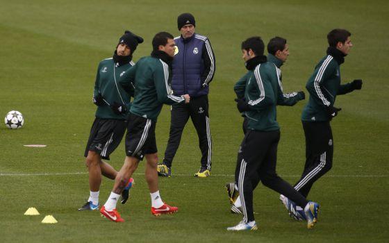
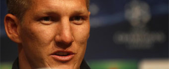

Nadal arrolla en Montecarlo
El español debuta ganando 6-1 y 6-2 a Matosevic, que disfrutó de 0-2 y doble bola de break en la segunda manga

El español debuta ganando 6-1 y 6-2 a Matosevic, que disfrutó de 0-2 y doble bola de break en la segunda manga
El Madrid, que apela a su memoria épica, no solo tendrá que cambiar su actitud de Dortmund para despachar al Borussia, sino mejorar notablemente su juego y tener mayor consistencia táctica
El español debuta ganando 6-1 y 6-2 a Matosevic, que disfrutó de 0-2 y doble bola de break en la segunda manga
Bastian Schweinsteiger, centrocampista del Bayern de Múnich, rebajó la euforia previa al choque del Camp Nou y recordó que su equipo aún no está en la final.
El ministro de Justicia: “El único partido condenado por financiación ilegal ha sido el PSOE”